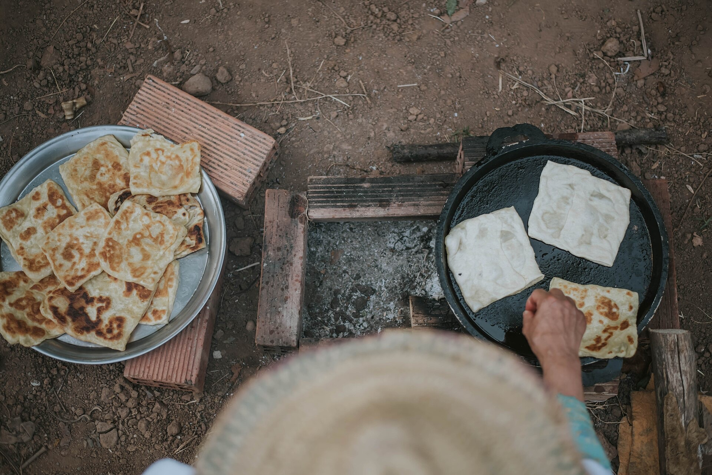
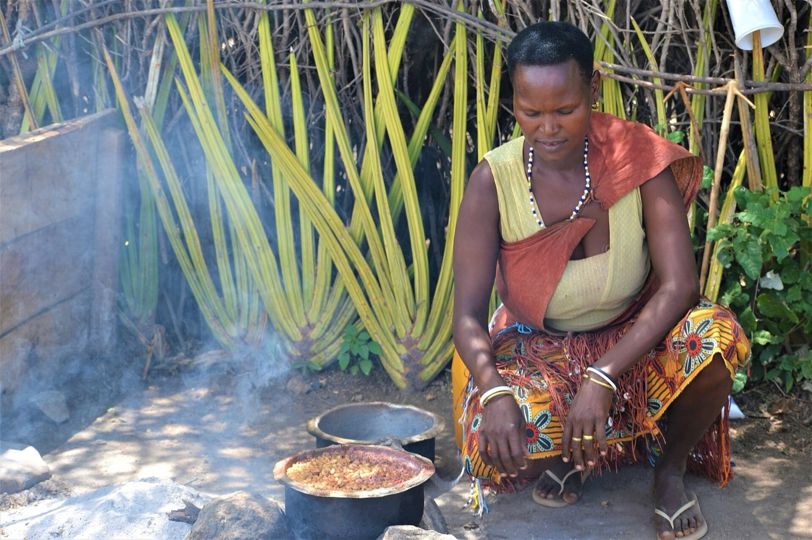
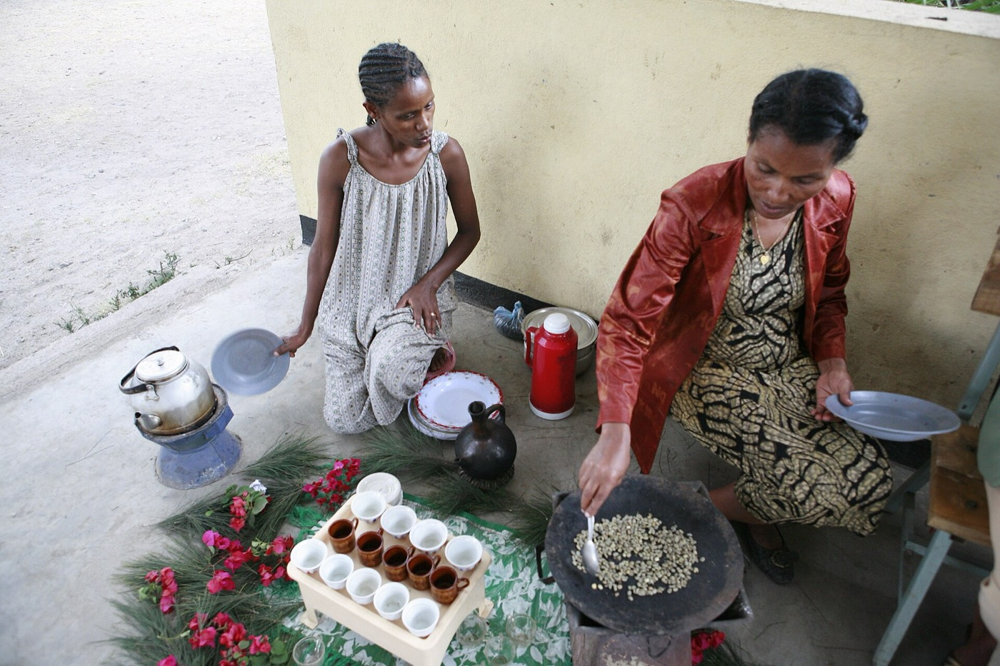
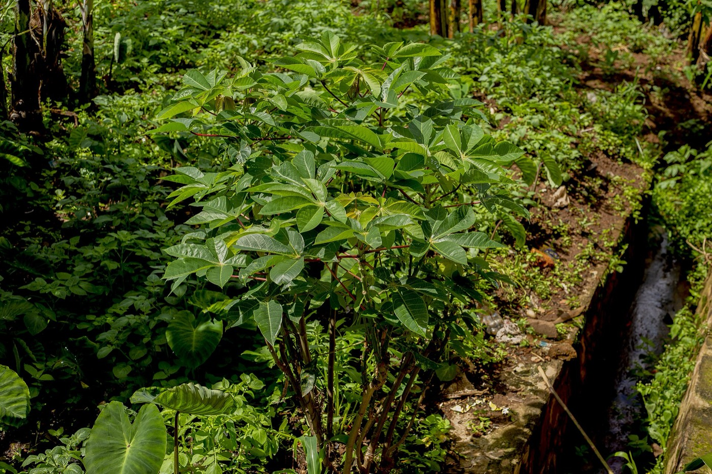
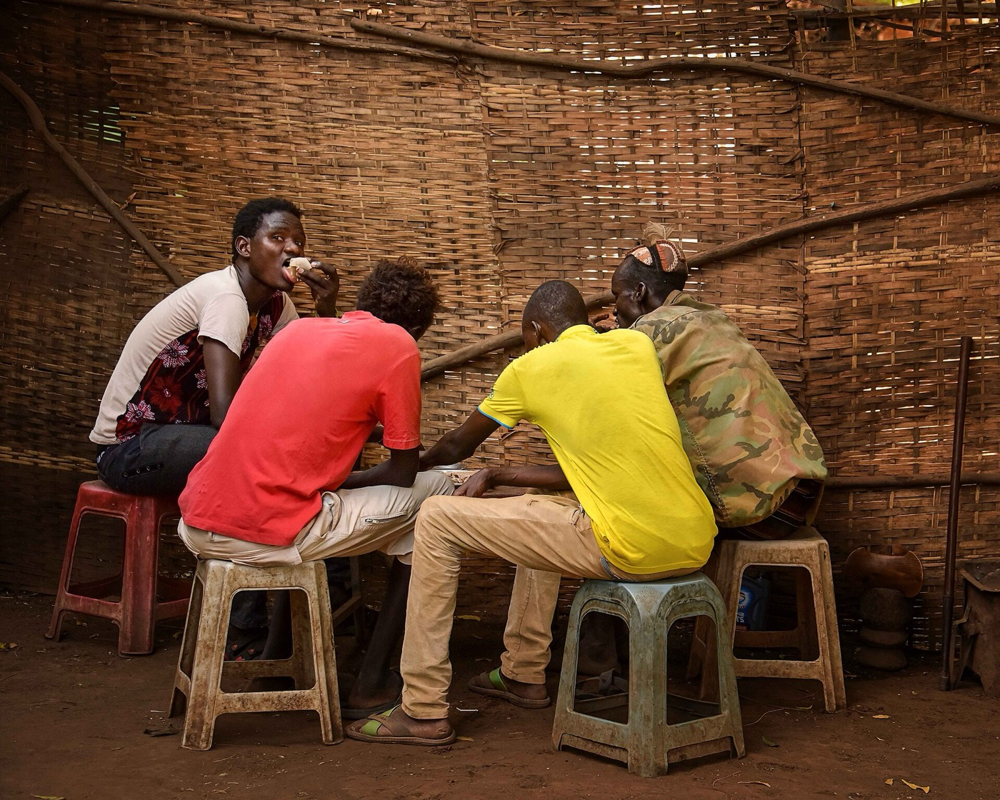

Traditional ingredients
Teff, sorghum, millet, yam, plantain, cassava, palm oil, egusi seeds, groundnuts and leafy greens feed millions of people every day. Spice blends such as berbere and ras el hanout carry the signature of their regions.

About us
We believe food is one of the most generous ways to understand a culture.

Our story
Taste of Africa began with a simple observation: across the continent, the most treasured recipes are rarely written down. They live in family kitchens and market stalls, and they pass from one generation to the next by watching, tasting and helping.
African food also deserves to be known in all its variety. "African food" is not one cuisine, but a vast collection of traditions shaped by land, history and community. We created this platform as a university project to give those traditions a warm, respectful home, and to help anyone start cooking them.
Our mission
Taste of Africa is a platform dedicated to celebrating, preserving, and sharing Africa's rich culinary heritage. Through traditional recipes, cultural storytelling, and regional food discoveries, we aim to connect people with the diverse flavors and traditions that make African cuisine unique.

Our vision
Traditional food knowledge is fragile. When young people move away from home and daily routines change, techniques that took generations to refine can quietly disappear. Writing them down and sharing them is one way of keeping them alive.
We imagine a world where African cuisine sits at the global table with the recognition it has earned, and where people in the diaspora can easily reconnect with the flavors of home, while curious cooks everywhere can learn these dishes with respect for where they come from.
African food heritage

Africa is one of the world's great centers of crop domestication. Sorghum, pearl millet, teff, African rice and yams were all first cultivated on the continent, and coffee comes from the Ethiopian highlands.
Trade added to this foundation. Spices arrived on Indian Ocean routes, and crops from the Americas, including maize, cassava, chili peppers, tomatoes and groundnuts, reached Africa from the 1500s onward. African cooks made these ingredients their own.
Teff, sorghum, millet, yam, plantain, cassava, palm oil, egusi seeds, groundnuts and leafy greens feed millions of people every day. Spice blends such as berbere and ras el hanout carry the signature of their regions.
A Moroccan tagine, a Nigerian pot of jollof and a Durban bunny chow have little in common beyond the continent they share. Climate, crops, faith, trade and migration have given each place its own way of cooking.
In many African communities, a meal is something you do together. People gather around one platter, guests are offered food as a matter of course, and large celebrations are cooked collectively.
African food traveled with people, often under the cruelty of the transatlantic slave trade. Enslaved Africans brought knowledge of crops such as rice and okra, shaping the food of the Americas. Gumbo's name is generally traced to a word for okra from the region of present-day Angola.
A landmark of food culture
Each evening, this famous square in Marrakesh fills with food stalls, storytellers and musicians. UNESCO recognizes its cultural space as part of the Intangible Cultural Heritage of Humanity, which makes it a fitting reminder that food, stories and community belong together.
Open in Google Maps
Join us
Whether you are rediscovering the dishes you grew up with or tasting them for the first time, we are glad you are here.
Start CookingThe photographs on this website come from Wikimedia Commons. They have been resized and compressed, and some are cropped for display. Our thanks go to the photographers.